빛나는 졸업짱
2005 스톤앤워터 신진작가 지원프로그램 로칼놀이 프로젝트 I
2005_0226 ▶ 2005_0312
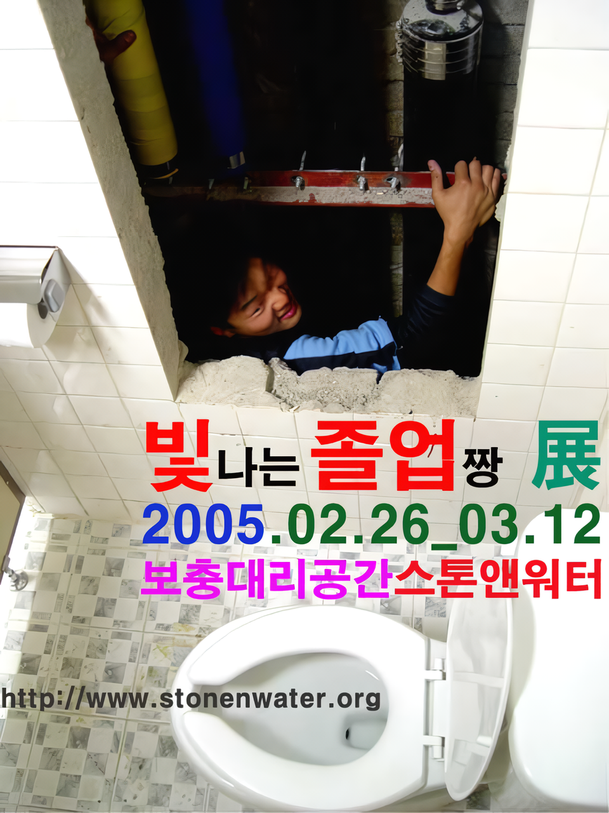
초대일시_2005_0226_토요일_4:00pm
참여작가
구세주_김택수_노호정_문진옥_박정재_박진경_황소영
보충대리공간 스톤앤워터
경기도 안양시 만안구 석수2동 286-15
Tel. 031_472_2886
www.stonenwater.org
이번 전시는 보충대리공간 스톤앤워터의 신진작가 지원프로그램의 하나로 2월에 미대를 졸업하는 안양, 안산, 군포, 광명지역 출신 7명의 작업을 소개한다. 대안중심의 비영리 전시공간을 표방하는 스톤앤워터는 2005년의 미술계 아젠다로 '지역성, 일상성, 공공성의 결합'을 제시하고 그 실천으로 신진작가 지원프로그램인 『로칼놀이 프로젝트』와 지역공공미술기획 『석수시장 프로젝트』를 기획, 추진하고 있다. 『빛나는 졸업짱』전은 로칼놀이 프로젝트의 일환으로 '연합 졸업전'의 형식을 취하고 있다. 그동안 스톤앤워터가 소개한 신진작가 전시지원의 경우 이번처럼 미대졸업생만을 대상으로 한 기획은 없었다. 작년 한.일 젊은 작가교류전으로 열렸던 『강력한 확장』전에서 경원대생들이 포함되었던 것이 기억에 남는 정도다. 제한적이지만 이번 전시에는 성신여대, 국민대, 한국종합예술학교 출신 예비 작가 7명이 선정되었다. 스톤앤워터는 이러한 졸업기획전을 정기기획전으로 삼아 매년 2월 달에 개최할 계획이다. 앞으로 이 기획전을 통해 보다 많은 대학, 지역의 출신 신진작가들이 소개 될 것이다.
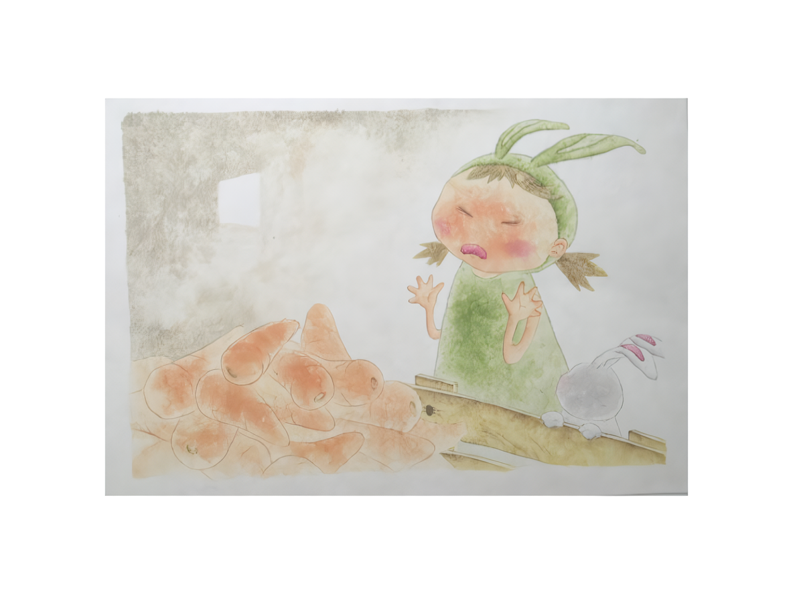
● 구세주_동양화를 전공한 구세주는 동화일러스트 작업을 병행한다. 부드럽고 간결한 선묘와 채색으로 「시크는 당근이 싫어요」 라는 제목의 창작동화를 보여준다.
_waifu2x_photo_noise3_scale.png)
● 노호정_중국 돈황벽화의 한 부분을 모사한 것이다. 수천년 동안 진행된 돈황벽화의 빛바랜 채색과 균열 등을 생생하게 모사했다. 질감, 색감의 모사가 뛰어난 작품이다.
_waifu2x_photo_noise3_scale.png)
● 문진옥_수세식 좌변기-그 안 물위로 달팽이 한 마리가 떠있다. 대체 이 녀석은 어디서 왔고 어쩌다 이곳까지 기어들어왔을까? 문진옥은 한 순간에 어디론가 사라져버릴 것 같은 물, 혹은 거대한 뚜껑이 닫힘으로써 암흑이 닥칠 달팽이의 상황을 통해 불안하고 불확실한 세계와 존재감에 대해 혹 당신도 달팽이 똥이 아닌가라고 묻는다. 화면을 지배하는 푸른색은 창백함 그 자체이다. 이 전시에서 작가는 평면 소품이외에 전시장 곳곳에 달팽이 캐릭터들을 풀어놓을(?) 계획이다.
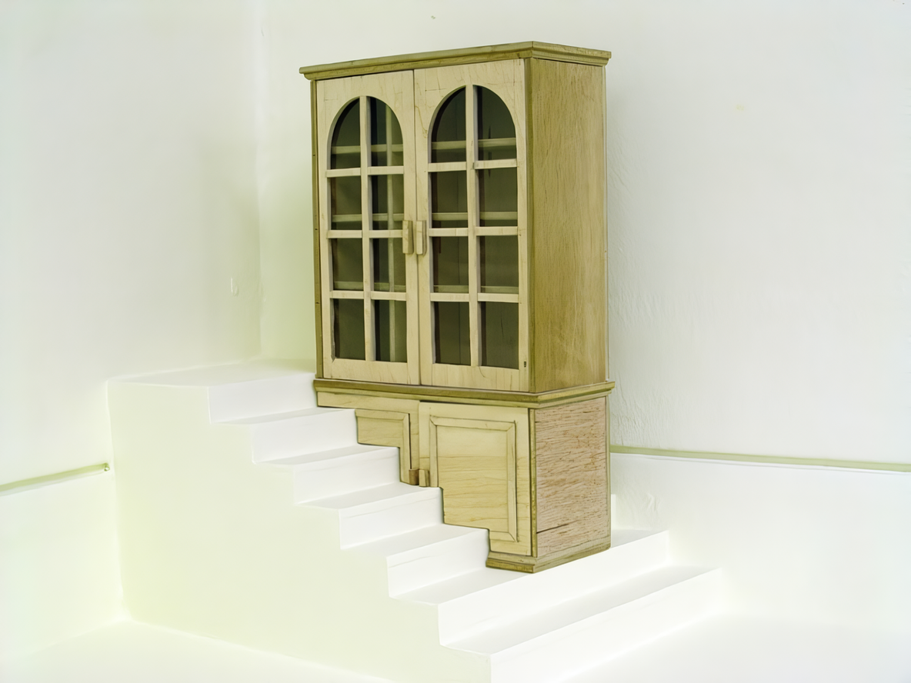
● 김택수_김택수의 작업은 여러모로 흥미로운 점이 많다. 엉뚱한 상상력으로 사물들의 본래의 기능들을 제거하거나 왜곡시키기도 하고 다른 기능을 결합시키기도 한다. 그가 만지는 사물들은 재치있는 위트가 가득하다. 마치 가능한 것이지만 그다지 실용성이 없어 보이는 것들을 발명해 사람들에게 즐거움을 주는 발명왕처럼 사물과 공간을 개념적으로 비틀려고 하는 경향이 강하다.
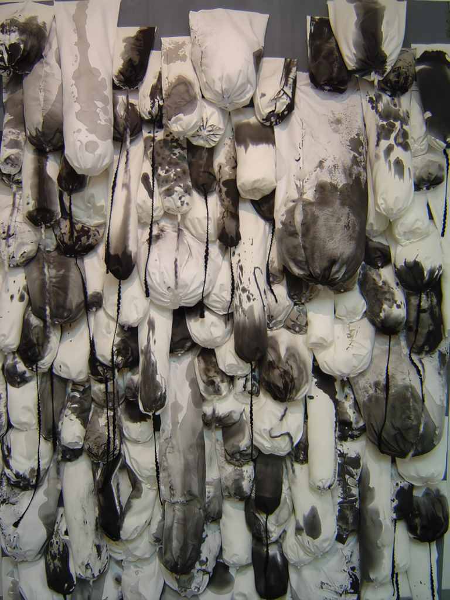
● 박정재_화면으로부터 돌출된 많은 하얀 천보자기들은 제각기 다양한 형태와 먹물의 농담으로 번져있고 어떤 것들의 끝에는 검은 실들이 늘어져 있다. 작가는 이것들이 여성의 젖가슴을 형상화하고 있다고 말한다. "(나이를) 먹는다"로 해석한다 해도 여전히 여성작가인 박정재의 화두를 해석하기는 아직은 어려움으로 남아있다. 수묵화에서의 발묵, 여백, 필선의 조형요소를 화선지가 아닌 천 오브제로 보여주고 있는 점이 흥미롭다.
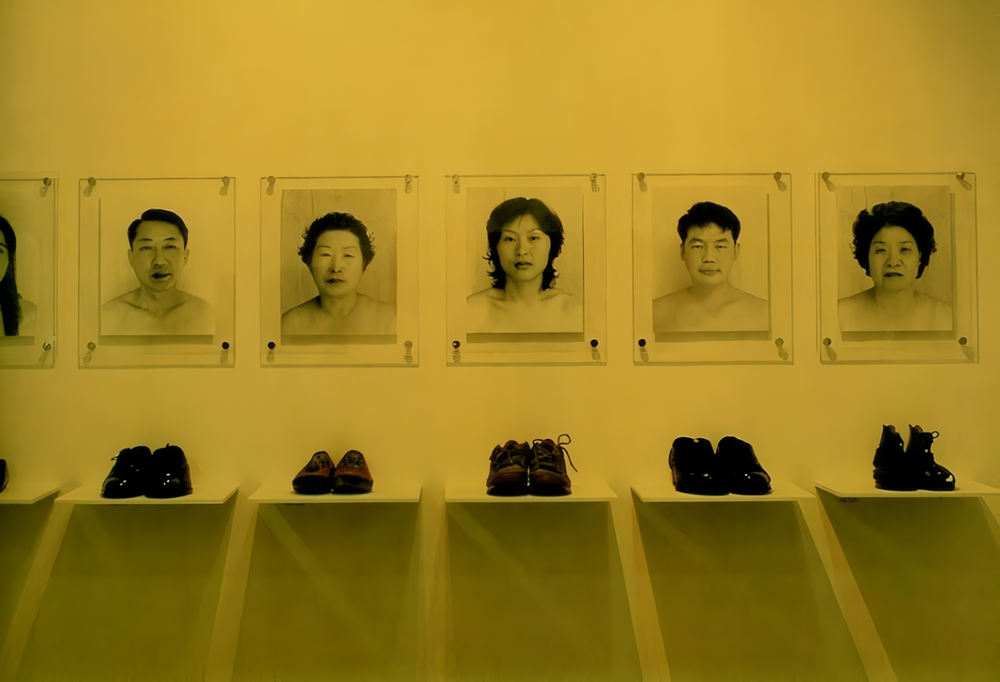
● 박진경_냄새(臭)-그 사람의 냄새, 신발은 그 사람의 체취를 간직하고 있는 물건의 하나이다. 박진경은 신발과 그 사람의 정체성을 연관짓는다. 이를 위해 그녀는 초상사진을 찍고 그 사람이 신고 있었던 신발을 함께 전시했다. 사진의 인물들은 모두 옷을 걸치지 않고 있는데, 이는 오로지 신발을 통해서 그 사람의 성격, 직업, 환경 등을 추측해보기를 제안하고 있다. 이 작품 이외에 작가의 내면을 표현한 평면오브제 작품인 「심상」도 소개된다.
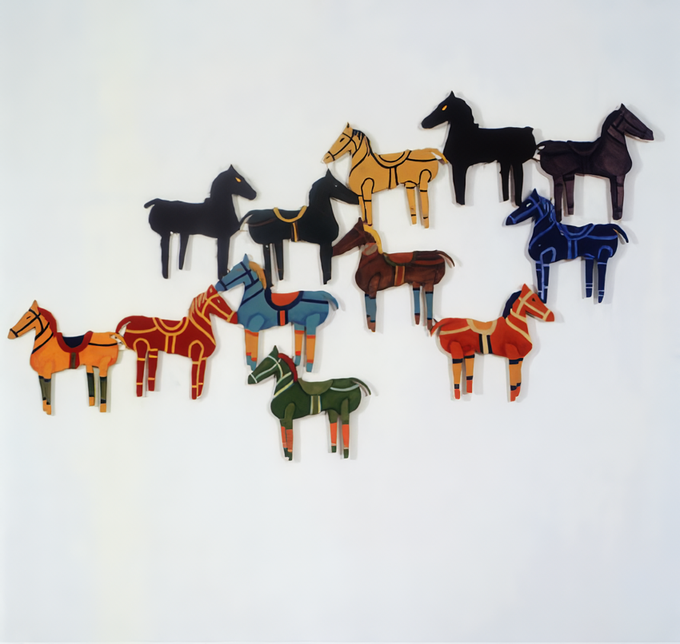
● 황소영_작품의 소재가 된 목마는 작가의 유년시절 향수 같은 것이다. 지금에 그것은 단지 조각난 그림처럼 여러 파편으로 남아있을 뿐이다. 황소영은 이솝우화의 동물의 의인화와는 반대로 인간을 동물화하여, 혹은 그 이미지들을 빌어 비유적으로 현대인의 상실감을 전달하고 있다. 이제 목마들은 아이를 등에 태워 더 이상 달리지 않을 뿐만 아니라 방향도 제각각이다. 그러나 작가는 "우리는 결국 닮은 모습을 하고 있는 저 목마무리처럼 같은 꿈을 꾸고 있다"고 말한다.
바야흐로 졸업시즌 2월이다. 시기적으로 미대졸업생-예비 작가들이 미술계의 주목을 받을 만 하다. 이들 가운데 머지않아 한국미술을 주도할 만할 재능 있는 작가가 숨어있다는 생각으로 기성 미술계는 이들의 작업에 관심을 가질 필요가 있겠다. 특히 지역미술계는 단순히 지역연고주의가 아닌 지역에서의 신진작가의 발굴과 지원에 대해 배려해야 할 것이다. 반면 졸업생들은 좀더 예술개념을 확장시키고 심화시켜 나가야 할 것이다. 지나친 장르 중심적, 기술 중심적 사고에서 통합적이면서 실험적이고 시대정신에 대한 깊이 있는 미학적 성찰의 시간이 필요할 것이다. 무엇보다 아카데믹한 대학교육으로부터 길들여진 자신의 예술관을 뒤돌아보고 새로운 감수성을 키워나가야 할 것이다. 새로운 감수성이란 결코 관념적인 것이 아니다. 그것은 자신의 지역, 일상주변을 관찰하고 미학적인 질문들을 끊임없이 제기하는 실증적 체험으로부터 추출할 수 있다. 이 과정에서 새로운 미학을 실험하고 미학적인 지문들을 집요하게 물고 늘어진다면 언젠가는 독창적인 자신의 예술이 정립될 것이다. 그것은 고독한 싸움이고 열정이다. 머나먼 여정이 시작됐다. 빛나는 졸업짱을 타신 모든 미대졸업생들에게 꽃다발을 한 아름 선사하고 싶다. 모두들 건승하시라!
■ 이명훈
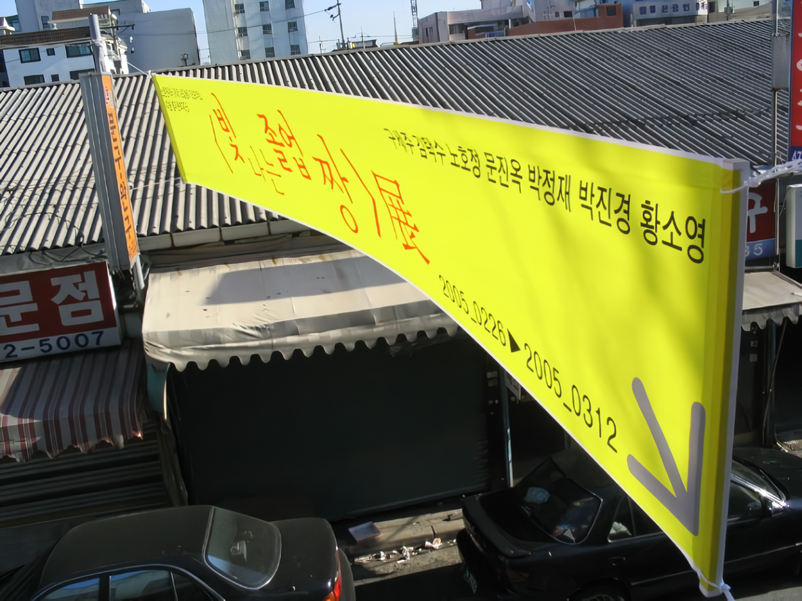 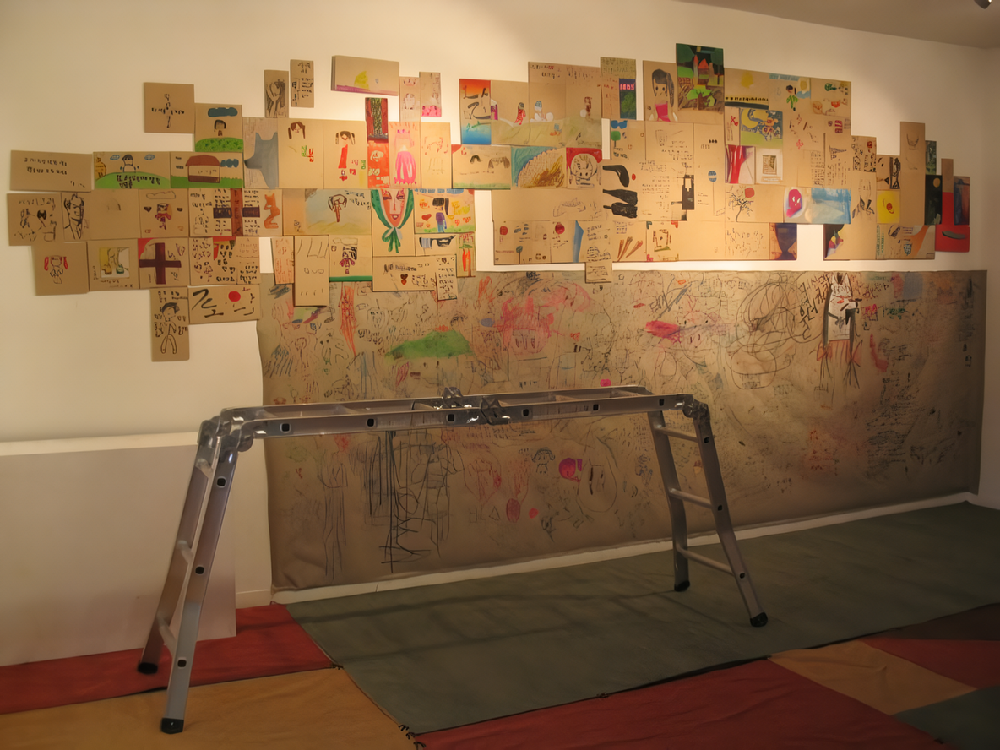 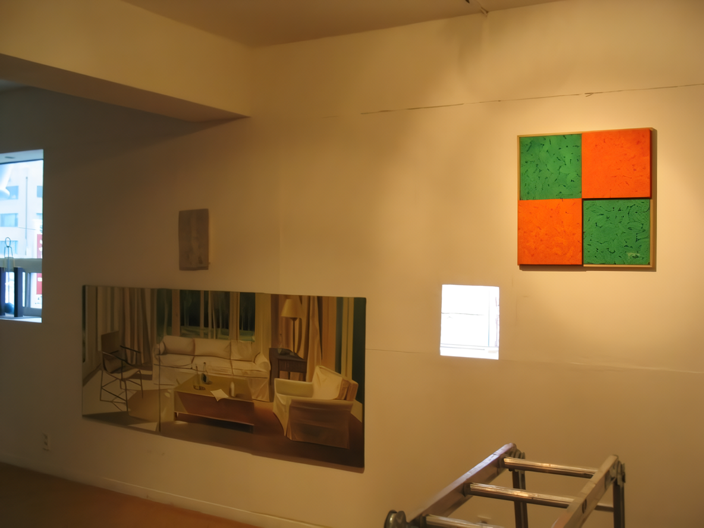 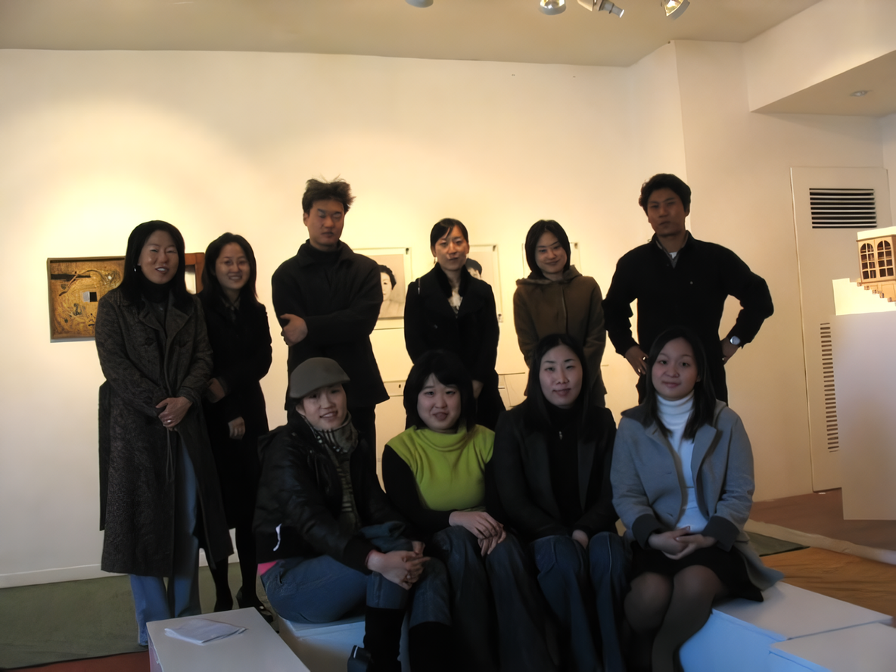 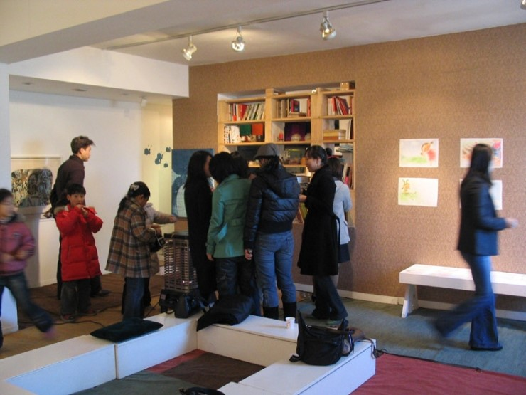 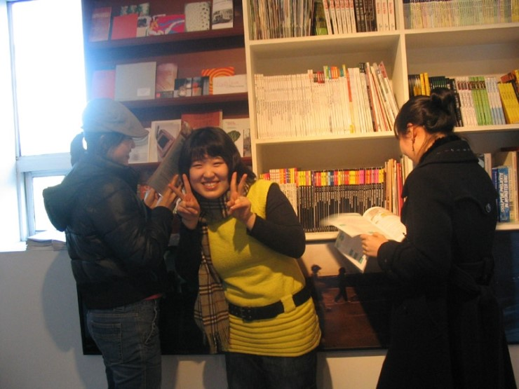 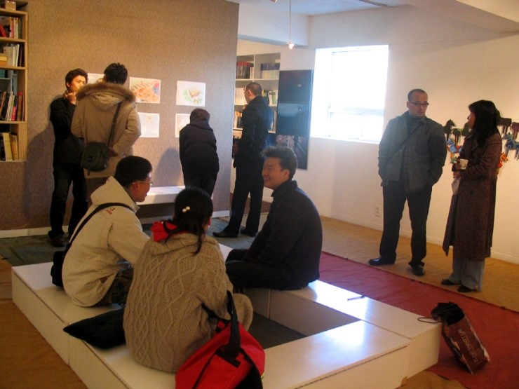 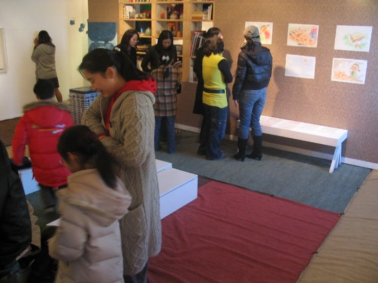 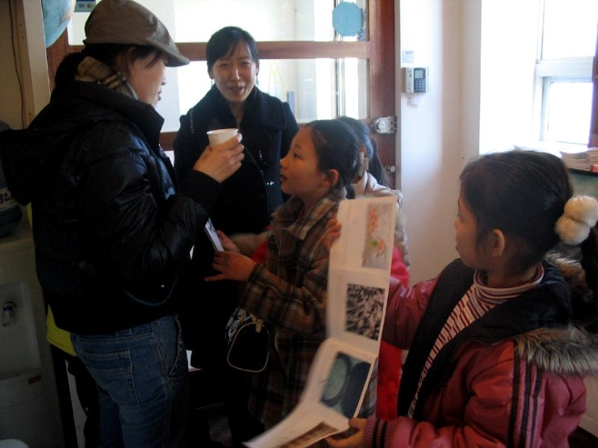